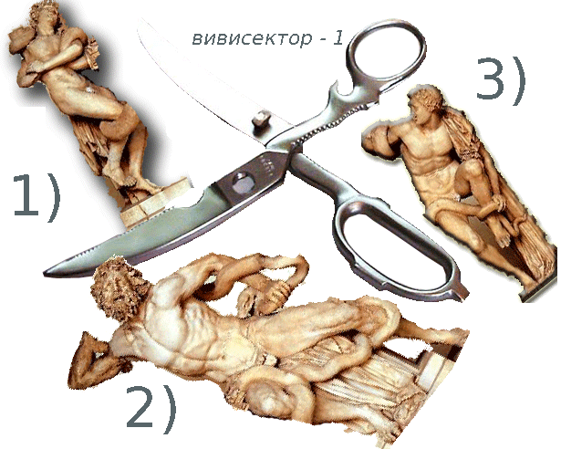
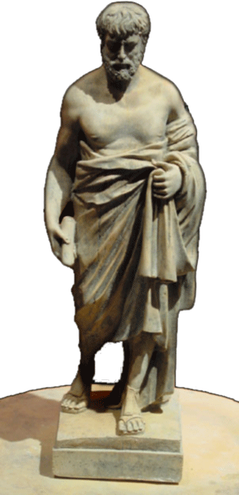

Гладко заокругленное определение – ниоткуда не подкопаешься и звучит солидно.
А дальше? Продолжать нанизывать такие же заокругленные ровно скользящие фразы, от которых глаза слушателей затягивает паутиной дремоты, а в мозгу расплывается скукотная сумеречность?
Правда, отюдь не возбраняется время от времени посверкивать фигуристыми вычурностями академического стиля, дабы ущекотать собственное ego- вона, мол, как лихо могём крутануть!
Так ведь щекотнёшься раз, другой; а там и приесться и выпрет—сквозь все риторические блестки и поигрывания ума—колкая, как неутаимое шило, правда – что я всего-навсего лектор.
А на латинском lector – это раб, обученый читать перед хозяином всякие тексты.
При таких истоках, будь ты хоть наисвободнейшим гражданином самой независимой державы мира, смутно чувствуешь (а себя не обманешь и не проведёшь), что ежели ты лектор, то в чём-то и насколько-то – раб.
Ну, а коли не согласен мириться с рабским своим состоянием? Если манит сладкое слово «свобода»?
Бунтовать?
Бессмысленное занятие. Единственный выход – заставить своих студентов(-хозяев), остекленелоглазо внимающих заокругленым лекционным витийствам, работать самим.
В древнем (античном) мире людей не различали по расовым, партийным и другим тонкосмысленным признакам, которых нынче развелось, как собак нерезаных.
Все люди подразделялись на два всего класса: человек мог быть либо свободным, либо рабом.
Раб – это пленник пойманный на войне, купленный у пиратов, или у его же родителей, а мог и сам себя продать – пока ничейный.
Основное назначение раба – работа на хозяина. На кого-то.
Ну, а свободные не работали, что ли?
Конечно, работали. Но не кого-то, а для чего-то. Для пропитания, например, или, там, для славы...
(Для чего ещё можно работать?
Ваши примеры, пожалуйста!)
Сам я из лекторов и в хозяева не стремлюсь – рискованно: а ну, как рабы взбунтуются? «Свобода»-то слово сладкое.
У кого нет хозяина, тот, пожалуй что, и не раб.
Выходит, что для снятия отношения раб-хозяин в системе лектор-слушатель, надо заставить студентов работать самих, но не на лектора, а для чего-то (вы уж сами решайте чего именно)...
Лично я работаю для достижения свободы. И работа моя заключается в том, чтобы показать, убедить, дать понять и почувствовать, что работать интереснее и приятнее, чем не работать.
Труднее, конечно, зато не так скучно.
А какая, конкретно, работа предлагается студентам в данном курсе лекций?
Пусть научатся познавать.
Для начала – познавать филологию. А когда научатся, то, глядишь, еще на чём-то себя попробуют; ведь когда чего-то умеешь – охота показать свое умение, пусть даже хотя бы лишь только перед самим собой.
Повторяю: предстоящая вам работа – научить себя как проводить познание.
Для данного трудового процесса основной рабочий орган не руки (хотя и им порой найдется дело), а мозги, сознание, разум.
Предметом же для тренировки помянутого органа пусть нам послужит романо-германская филология.
Редко когда бывает, чтобы предмет труда (грядка, дрова, крепдешин) вступал бы в прямой контакт с соотвественным рабочим органом. Обычно применяется какой-то рабочий инструмент – лопата, топор, игла...
Какие рабочие органы орудуют только что перечисленными инструментами?
(Руки, руки, руки.)
Какой же инструмент требуется сознанию?
Кто сказал «ручка»? Это для пальцев, а не мозгов.
На данный момент мне известен только один такой инструмент.
Наверное (и даже наверняка), он был, есть и будет знакóм и другим познавателям, которые его, конечно, как-то называли и описывали, но мне его название и описание, увы, не попадалось.
А может и попадалось, да я его прошляпил, пребывая в мозговой сумеречной дрёме, и теперь приходится заново изобретать велосипед.
Так пусть же имя этому заново-изобретаемому прибору будет – «вивисектор-1».
Звучит впечатляюще, не так ли?
Всякому прибору-инструменту полагается свое назначение: пилой – пилят, сверлом – сверлят, рубанком - ..? (...ой, ли? не дремать!..)
Ну, так что же будем делать вивисектором?
Правильно – познавать!!!
Познать что-либо это значит быть в состоянии ответить на вопрос: что оно такое?
Познавший жизнь, любовь, картошку должен уметь держать ответ что такое жизнь, любовь, картошка.
Но не надо путать слова «познать» и «познакомиться».
Для знакомства с картошкой можно обойтись и вилкой, а вот чтобы познать картошку требуется вивисектор-1.
Чем знакомятся с жизнью, с любовью? (.. место для ответов студентов...)
Чем познают жизнь, любовь? (.. место для ответов студентов...)
... совершенно верно – вивисектором-1.
Однако, жизнь с любовью отложим на потом,
потому как предмет нашего нынешнего рассмотрения – филология.
Теперь посмотрим как действует вивисектор-1.
ИНСТРУКЦИЯ ПОЛЬЗОВАТЕЛЯ
Вивисектор-1 это вспомогательное
орудие при составлении ответа
на вопрос «что оно такое?»
Вопросительное слово «что»
из предыдущего предложения
вивисектор-1 рассекает на три под-вопроса:

частью чего является познаваемый предмет?
из каких он состоит частей?
чего ради существует?
Ответив на каждый из трех высеченых
вивисектором-1 под-вопросов, мы затем совокупляем полученные ответы друг с другом и получаем ответ на изначальное «что оно такое?»
Именно так, пропуская разные разности через вивисектор-1, познаем мы эти самые разности.
Для наглядности попрактикуемся на кошечках:
частью чего является кошка?
(...мира животных...)
из каких частей она состоит?
(...у кошки четыре ноги, позади у нее длинный хвост...)
чего ради она существует?
(... чтобы мыши не борзели...)
Во-1-х, орган труда, он же рабочий орган, он же мозг.
Во-2-х, орудие труда, оно же «вивисектор -1».
В-3-х, предмет труда, он же сырьё для прознания, оно же «романо-германская филология», в которую нам нужно ввестись, согласно учебным планам предусмотренным для обучения студентов III курса филологического факультета данного учебного заведения.
И на этом – в путь...
Что есть филология?
Если мы скажем, что филология это филология, значит мы сачкуем, уклоняемся от работы над предметом.
Научным языком, такое сачкование, когда с умным видом изрекают, что жизнь есть жизнь, что закон есть закон, а яичница есть яичница, называется тавтологией.
Такое вот длинное название у отказа от познания и проникновения в суть предмета.
Лучше уж сказать, что яичница – это Божий дар, чтоб выискался знаток с призывами не путать их, и что яичница – плод стараний курицы и сковородки.
А кто-то возразит уже ему, что сковородка неодушевлённая и стараться не может, а третий заметит, что...
И это хорошо, значит началось познание и пошёл процесс рождения истины.
Так что же есть филология?
Ну, раз её изучают и вносят в учебные планы, она, наверное, есть наука.
Отметим: филология – наука.
Это уже определенное продвижение/погружение/восхождение – кому как удобней! – на первый уровень понимания сути филологии.
Чтобы познать ещё глубже надо сделать следущий шаг – докопаться до второго дна, ответить на вопрос «что есть наука?»
Если сказать, что «наука – это филология» выйдет затяжная тавтология, замаскированное сачкование, которое ненаучно называется «тянутием резины» или «шлангованием».
Коль мы беремся всерьёз, то здесь, пожалуй, самое время пустить в ход «вивисектор-1».
Пихаем в него вопрос «что есть наука?».
Рассекаем «что» на три под-вопроса для получения трёх ответов:
наука есть область деятельности людей
(помимо прочих областей, таких как питание, сон, игра, драка ...)
наука состоит из познания
(нахождения ответов на вопрос: «что оно такое?» и складирования результатов познания (хранение знания, передача информации))
она существует, чтобы люди наивозможно удобнее устраивались бы в жизни
(не познавший кулинарной науки в разделе ПРИГОТОВЛЕНИЕ ЯИЧНИЦЫ вынужден есть их сырыми, или вареными).
И какой же предмет познания у науки филологии?
Не будем выкобениваться остроумием, выстраивая ажуристые подходы, а рубанём навпрямки и скажем, что предметом филологии есть язык, но не анатомический орган, конечно, а язык как система передачи и получения информации, то есть, знания о чём или ком-либо.
Вот о каком языке добывает и хранит знания наука филология.
А теперь громко произнесем: - Филология – наука о языке! (и прислушаемся – нет ли возражающих?)

Пока что тихо.
Идем дальше.
Для овладения знанием какой-то науки есть два пути.
Путь первый – зазубрить добытое ею знание и потом повторять как эхо, попугай, или закольцованная магнитофонная запись:
«...филология – наука о языке, филология – наука о языке, филология – наука о языке, филология – наука о языке, филология – наука о языке...»
Путь второй – не заучивать готовый результат, а попытаться постичь процесс познания приведший к этому результату.
Однако, путями, или способами познания, занимается особая наука – гносеология. А наш предмет – филология, наука, предмет которой – язык, наука познания и знания о языке, т.е. – языкознание.
Таким образом, погрузившись или взойдя (кому как удобнее) на третий уровень в нашем познании филологии, мы обнаружили, что филология – это языкознание.
Громко произнесем «филология - это языкознание!» и прислушаемся – нет ли возражений?
Есть!!
Потому как в учебных планах для студентов обучающихся на филологическом факультете языкознание стоит отдельным предметом.
Что-то тут не так, смахивает на надувательство.
Что за туфта?
Выходит, на филфаке под разными именами учат один и тот же предмет?
Однако разборку на эту тему отложим до следущей лекции.
ЗАДАНИЕ:
Пропустить через вивисектор вопрос
«что такое стипендия?»